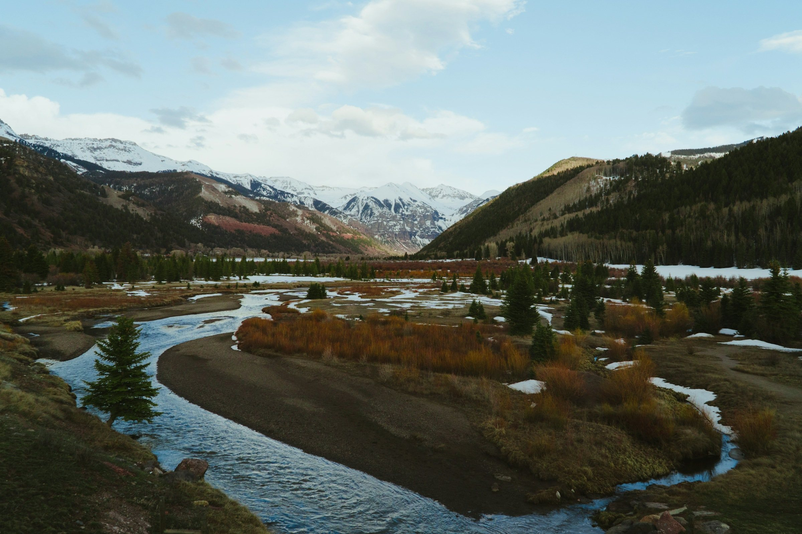

Market reports
Telluride Real Estate Market
What makes it tick: Garrett's six reasons this market behaves differently from other resort towns, and how to get current numbers for the place you are watching.
Six reasons
Six Telluride real estate market fundamentals
This list first ran on Garrett's old site. It has held up because none of it depends on a particular year: it comes down to land, rules, access and geography.
Current numbers, on request
Prices and inventory move every month, so this page does not print them. Tell Garrett the area, building or kind of property you are watching and he will put together current figures for it. Every report he prepares names its MLS source and the period it covers.
-
A year-round economy
Skiing is only part of why people come. The ski season runs from late November into early April, and summer and fall bring the hiking, the biking and a festival calendar that includes Telluride Bluegrass in June and the Telluride Film Festival over Labor Day weekend. Buyers who never ski find as much reason to own here as buyers who do.
Garrett shows property in every season, and each one tells you something different about a house.
-
Little land to build on
National Forest land surrounds the Telluride valley, and the ski area itself operates partly on National Forest land under a Forest Service permit. The Bureau of Land Management looks after more public land along the San Miguel River, and the Town of Telluride keeps the 560-acre Valley Floor at the entrance to town as open space. Private land fills the gaps between them, and all of it falls under a town or county land use code.
That is the supply side of this market. If you want land, start on the mesas: Deep Creek Mesa, Turkey Creek Mesa, Wilson Mesa and Hastings Mesa.
-
Quality control
In the Town of Telluride, new buildings and changes to existing ones go before the Historic and Architectural Review Commission, which applies the Town's design guidelines and standards. In Mountain Village, a seven-member Design Review Board appointed by the Town Council reviews projects against the Community Development Code and its design regulations.
Both reviews are extra steps for anyone building or remodeling, and both are part of why the two towns still look the way buyers expect them to. Before you commit to a lot or a remodel, Garrett can walk you through what either process will mean for it.
-
Rare physical beauty
Start with the setting: a box canyon walled in by the San Juan Mountains, with mesas opening out to the west. Two towns share it, joined by one ski area and by the free gondola the Town of Mountain Village has run since 1996. The ride between them takes about twelve minutes, and anyone staying in either town can get by without a car.
Mountain Village sits on the ski mountain, which is why most of the region's slope-side homes and condos are there. The Town of Telluride sits at its foot, in the canyon.
-
Road and air access
Telluride has a reputation for being hard to reach. Garrett thinks the reputation has done the valley a favor, because it is part of why the area never sprawled the way other resorts did. The trip itself is easier than most people expect.
Telluride Regional Airport is about six miles from town and has scheduled commuter flights as well as private aircraft. Montrose Regional Airport, about 65 miles away, has more routes, including seasonal nonstops from major hubs. By road from Montrose you come through Ridgway, over the Dallas Divide and up the San Miguel River from Placerville. Last Dollar Road, a high-clearance dirt road, crosses Hastings Mesa from the Dallas Divide toward Telluride.
-
Historic character
The Town of Telluride has been a National Historic Landmark District since 1961, recognized for what it shows of the mining boom of 1878 to 1913. The Town uses design review to protect the district's buildings, sheds and site features.
For a buyer, an older house in town can come with its own review rules. Garrett can tell you which questions to ask about a historic property before you make an offer.
Resources
Where these facts come from
Checked against each source in October 2026.
- Town of Telluride: historic preservationThe National Historic Landmark District and the Historic and Architectural Review Commission
- Mountain Village Design Review BoardHow the Town of Mountain Village reviews building design
- The free gondolaTown of Mountain Village: the stations, the seasons and the off-season bus
- Grand Mesa, Uncompahgre and Gunnison National ForestsThe National Forest around Telluride, managed from the Norwood Ranger District
- BLM Uncompahgre Field OfficePublic land along the San Miguel River and across the region
- San Miguel County PlanningThe land use code for land outside the towns
- Telluride Regional AirportFlights, charters and ground transportation
- Montrose Regional AirportThe larger regional airport, about 65 miles from Telluride
Market reports
Ask Garrett what the numbers say
Tell him the area, building or kind of property you are watching. Call or text 970-708-1155, or send a note through the contact page.